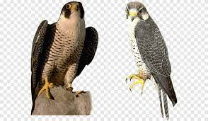

Olá seja bem vindo. site teste.
Os animais de estimação são animais domesticados que são cuidados por seres humanos com o propósito de oferecer companhia. Acredita-se que a relação entre humanos e seus pets seja simbiótica, ou seja, ambos se beneficiam da conexão. Esses animais geralmente são mantidos em casa, junto com os humanos.
os cães tem a capacidade de sentir a energia de nossas emocões
fique sabendo!homens e passaros
 fique sabendo!os gatos são companheiros?
 fique sabendo!
fique sabendo!